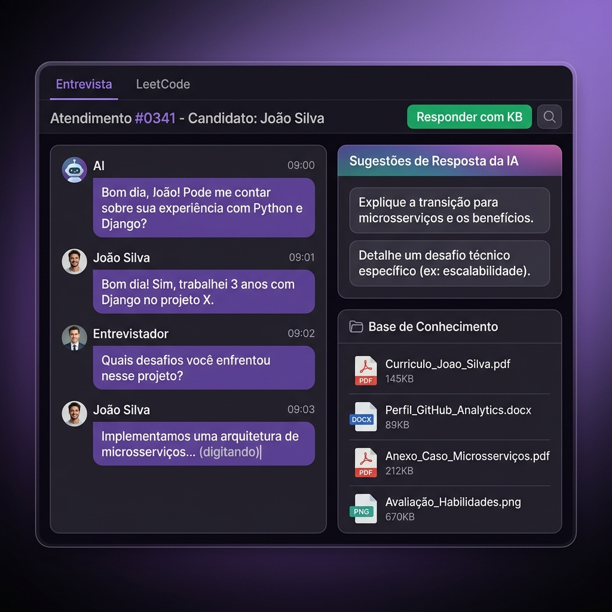

Clareza e Foco na sua Entrevista
Desenvolvido para pessoas com Autismo, TDAH ou desafios de comunicação. O Assistant Interview transcreve a conversa, extrai a pergunta real no meio de rodeios e sugere respostas claras em tempo real.

Seu Suporte Executivo Pessoal
Recursos projetados para reduzir a sobrecarga cognitiva e ajudar você a estruturar suas ideias com confiança sob pressão.
Filtro de Ruído e Síntese
O entrevistador falou por 3 minutos seguidos? A IA transcreve, analisa e diz a você de forma direta o que ele realmente quer saber, sugerindo a melhor forma de estruturar sua resposta.
Entrevistas em Inglês Sem Ansiedade
Suporte para vagas internacionais. A ferramenta traduz a conversa e gera sugestões de resposta no seu idioma ou em inglês, usando um vocabulário alinhado ao seu nível de proficiência.
Guia Visual para Live Coding (LeetCode)
Por meio de prints da tela, a IA compreende o desafio técnico. Mais do que dar a resposta, ela ajuda a estruturar seu raciocínio e orienta exatamente como verbalizar a sua solução para o entrevistador.
Base de Conhecimento (Contexto Total)
Faça upload do seu currículo, LinkedIn e da descrição da vaga (em PDF, Word ou texto). A IA utiliza esses documentos para gerar sugestões de resposta altamente personalizadas com seu histórico real.
Nativo para o seu ecossistema
O Assistant Interview roda de forma segura e fluida no seu sistema, garantindo que você tenha suporte invisível e eficiente durante qualquer videochamada.
Apoio Contínuo para a Sua Carreira
Obtenha a ferramenta e ganhe tranquilidade para todas as suas próximas entrevistas.
Pro Edition
Pagamento único, atualizações e suporte inclusos.
- Licença para Windows e MacOS
- Transcrição e Síntese em Tempo Real
- Suporte à Tradução e Live Coding
- Atualizações garantidas